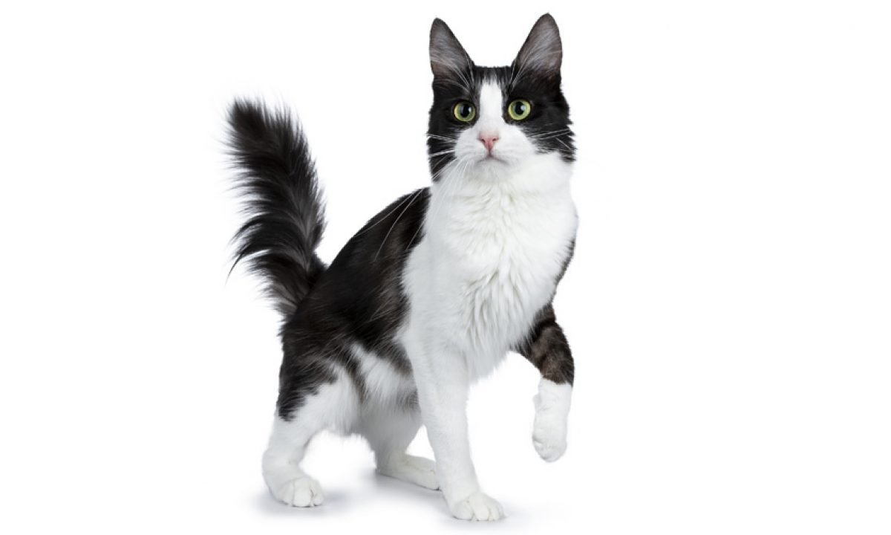
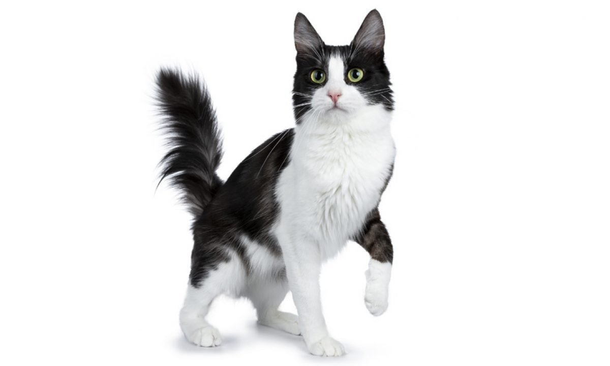

Si quieres ver más imagenes de gatitos, da click en este enlace.
3 Cosas que los gatitos aman
3 Cosas que los gatitos odian
¿Tu gatito es cachorro o es adulto?
¿Qué tipo de personalidad tiene tu gato?
 
